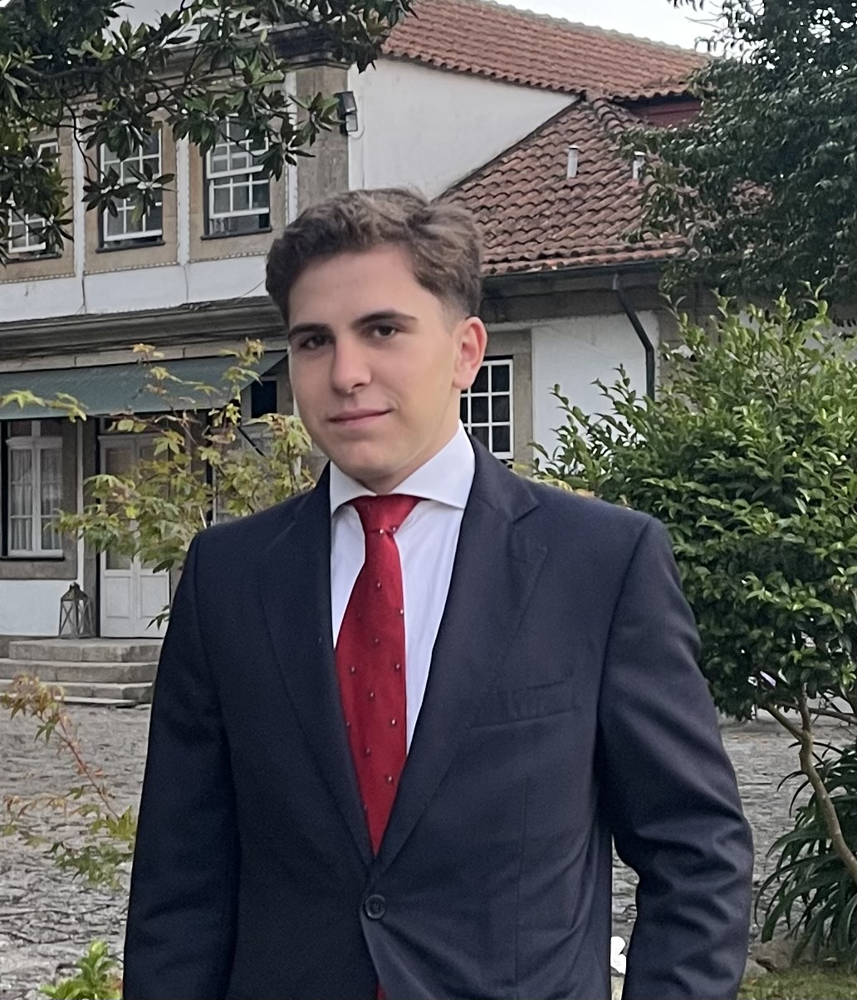

Paulo Domingos Melo Santos Pereira
18 years old | Student of Artificial Intelligence and Data Science | @FCUP/FEUP
Education: Currently pursuing a Bachelor's degree in Artificial Intelligence and Data Science at the Faculty of Sciences, University of Porto (since 2024). Completed secondary education at Garcia de Orta High School (2021-2024).
Experience: Staff at CLIP Oporto International School (Summer 2024) and participation in a research project at i3S, focusing on Drosophila melanogaster crossings and genetic data analysis.
Technical Skills: Proficient in Microsoft Office and basic knowledge of Python programming.
Soft Skills: Communication, leadership, and critical thinking.
Languages: Native Portuguese and basic English skills.
My Latest LinkedIn Post